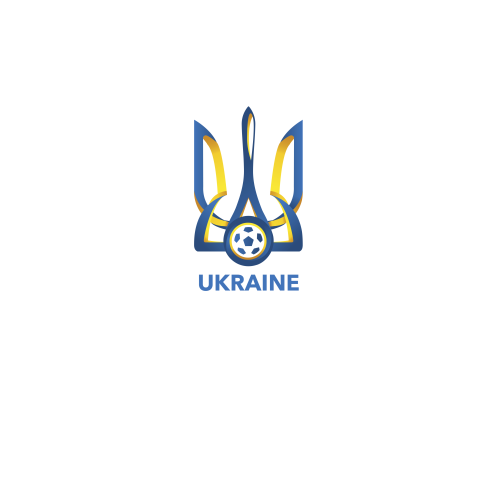

|  | Перейти на іншу сторінку | Перейти в браузер google |
Командний вид спорту , в якому метою є забити м'яч у ворота суперника ногами або іншими частинами тіла (крім рук) більше разів, ніж команда суперника. В даний час найпопулярніший і масовий вид спорту у світі. Грають 2 тайми по 45 хвилин, по 11 гравців на полі під час гри. У футбол грають на прямокутному полі з воротами на кожному кінці. Мета гри полягає в тому, щоб забити м'яч у ворота протилежної команди. Гравцям не дозволено торкатися м'яча руками, поки він перебуває в грі, якщо вони не воротарі (і тільки тоді, коли він перебуває в їхньому штрафному майданчику), або під час укидання м'яча. Інші гравці здебільшого використовують свої ноги, щоб завдати вдару або передати м'яч, але можуть також використовувати голову і тулуб.
Команда,яка забиває більше голів до кінця матчу — виграє його. Якщо жодна команда не забила м'яч, або рахунок однаковий, то оголошується нічия, або гра переходить у додатковий час, або пенальті, залежно від формату змагань.
Часто називають футзалом, є міні-футбол, змагання з якого проводяться під егідою ФІФА. Ці види спорту часто плутають, але між ними є різниця: футбол в залах ближче до великого футболу, в ньому дозволені підкати, а м'яч з ауту вводиться руками, на відміну від міні-футболу.Грають 2 тайми по 20 хвилин, по 8 гравців на полі під час гри.
Поле для гри має форму прямокутника. Бічна лінія повинна бути довшою за лінію воріт. Довжина: щонайменше 50 м, максимум 70м. Ширина: щонайменше 30м, максимум 45м.Пляжний футбол (англ. beach soccer) — вид спорту, заснований на правилах гри традиційного футболу. Змагання проводяться на піщаних пляжах, при цьому особливе значення має техніка володіння м'ячем і швидкість пересування по грузкій поверхні.
За вимогами ФІФА розміри ігрового поля: 28 м завширшки х 37 м завдовжки. По всьому периметру до поля прилягає зона шириною 2 м на відстані від бічних ліній/ліній воріт до місця встановлення рекламних щитів. Ці зони поділяються за допомогою розмітки.Пропоную перейти на іншу сторінку сайту, посилання нижче